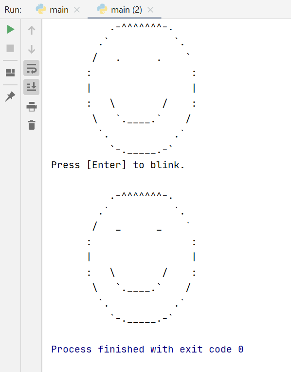

Super Smiley Face!
In this task, you will be writing code to do draw a smiley face!
Instructions:
- The top smiley face is already drawn for you.
- Fill in the blank to ask and wait for the user to press enter You'll need to use the
input() command.
- Complete the bottom smiley face.You can copy and paste the top smiley face and modify it
Your final output should look like this:
